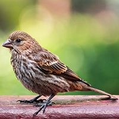
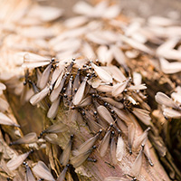

Ever hear rustling in the trees and wonder who—or what—is up there? If you live in a neighborhood with mature trees, chances are your yard is a hotspot for local wildlife. From songbirds to squirrels to curious raccoons, your trees are more than just background. They’re homes, highways, and sometimes hideouts for species aplenty. Some of these visitors are harmless, even helpful. Others can cause damage to your trees, your home, or both. As a homeowner, it’s important to know the difference and to maintain your trees in a way that supports a healthy balance between nature and your property. And if you’re ever unsure, calling a trusted tree company in Smithville like Ben Bivins Tree Experts can help you make the right decisions.
The Friendly Faces in Your Trees

Let’s start with the good news: many animals that take up residence in your trees are beneficial for your yard and the local ecosystem.
- Songbirds like finches, robins, and chickadees use trees for shelter, nesting, and feeding.
- Pollinators like bees, butterflies, and hummingbirds are drawn to flowering trees and are crucial for plant reproduction.
- Bats, though often misunderstood, help control mosquito populations and pollinate some plants.
- Tree frogs are natural pest controllers, eating insects that might otherwise bother your garden.
Having these kinds of animals around is a sign that your trees are healthy. A diverse population of wildlife usually means a tree and yard is strong, structurally sound, and producing the food and cover animals need.
Not Every Critter Is a Good Neighbor
While some wildlife can enhance your yard’s charm, not all animals are harmless. Some can indicate bigger issues or become nuisances themselves. This isn’t to say that these animals need immediate eradication. Rather, they should be seen as red flags or items that need closer attention.

Raccoons can use overgrown limbs as highways to your roof and attic, especially if they find an opening.- Possums might take up residence in dead tree hollows or brush piles, often spreading fleas.
- Woodpeckers, while striking, may signal rot inside the tree (they’re digging for insects).
- Carpenter ants and termites are serious red flags—usually they arrive only after a tree is already dead or dying.
- Snakes may hide in the roots or under low branches, especially if your yard has heavy groundcover.
- Squirrels may nest in your attic if they can leap from tree limbs directly to your home.
Left unchecked, these animals can cause property damage, spread disease, or make your yard less safe, especially for children and pets.
Tree Health Tips for Homeowners
If you’re hoping to keep wildlife friendly and limit the troublemakers, your best defense is good tree care.
- Remove deadwood and overhanging limbs with regular pruning. Pruning limits access to your roof and keeps trees healthy.
- Hollow spots in the trunk or large limbs can harbor animals or be signs of decay. If found, these cavities should be checked by a professional.
- While looking for cavities, check for insect activity too. Sawdust around the base of a tree, peeling bark, or clusters of ants are all signs something is wrong internally.
- Avoid “Volcano Mulching”. Mulching too close to the trunk creates moisture and decay, which attracts pests. Keep mulch a few inches away from the base.
- Monitor tree roots throughout your yard. Bulging or exposed roots could indicate instability. Animals sometimes dig around roots, which can weaken trees.
A certified arborist can help you assess all of this safely and accurately—especially if a tree is near your home, fence, or septic system.
Tree Removal or Wildlife Relocation? A Tree Company in Smithville can Help You Decide
You don’t always need to remove a tree just because something is living in it. But sometimes, removal becomes the safest option:
- The tree is dead or dying.
- It’s leaning or unstable near a structure.
- It’s hosting pests that could spread to your home.
- It’s dropping limbs due to disease or rot.
In cases involving active nests, baby animals, or protected species (like bats or certain birds), your tree company can coordinate with wildlife specialists to relocate the animals safely and legally.
Local Help from a Tree Company in Smithville
Every tree is different. Some are strong and self-sustaining. Others need regular trimming, disease management, or even removal to keep your property safe. If you’re noticing unusual animal activity, nests, or signs of decay, don’t try to handle it alone. Improper trimming or disturbing wildlife can be dangerous. The team at Ben Bivins Tree Experts is experienced with all aspects of tree care in South Jersey. We know how to assess a tree’s health, protect wildlife responsibly, and maintain your trees so they stay beautiful, safe, and functional for years to come. For professional guidance from a trusted tree company in Smithville, reach out to us today.